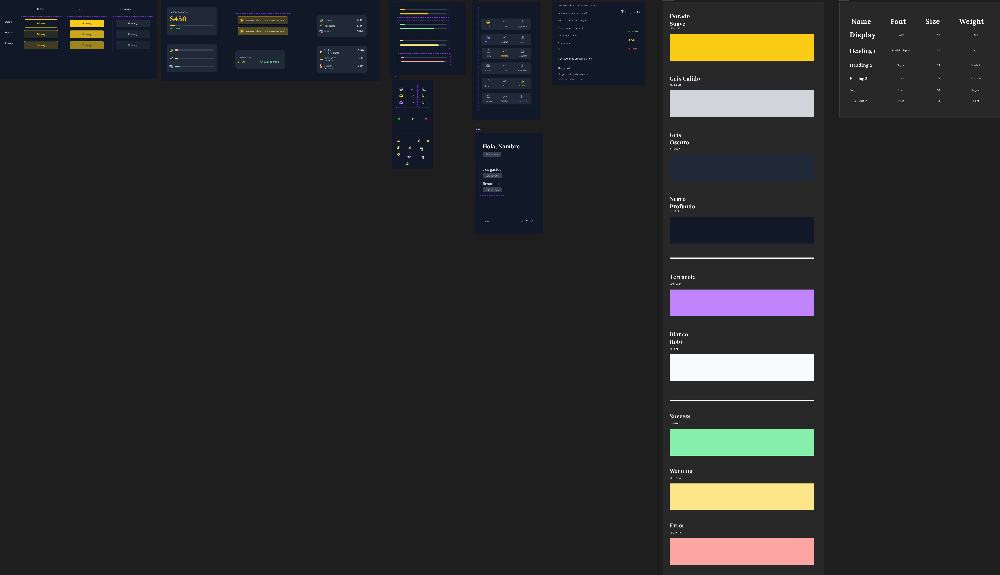

Fintech app for clearer spending decisions
A mobile finance experience designed to help users understand what money is truly available to spend, instead of relying only on their visible bank balance.

Helping users make sense of their money
The product was designed for people with variable income who need a simpler way to understand their financial situation. The main challenge was not just showing a balance, but helping users understand whether that money was actually safe to spend.
The balance was visible, but the decision was unclear
Users could see how much money they had, but they still struggled to understand what amount was available after considering upcoming expenses, financial commitments, and spending patterns.
“I can see my balance, but I still don’t know if I can actually spend that money.”
One of the main insights identified during the research process.
From research to interface
- Defined user needs through research and usability observations.
- Created user flows, wireframes, and interface explorations in Figma.
- Designed a clearer financial visualization focused on fast comprehension.
- Tested the prototype with Maze and used findings to iterate the experience.
How I moved from insight to product decisions
Understand
Identified the main confusion users had when interpreting their available balance and financial commitments.
Simplify
Reduced financial complexity by prioritizing the most important information users needed to make a quick decision.
Prototype
Created wireframes and high-fidelity screens in Figma to test different ways of showing spending clarity.
Validate
Used usability testing to understand whether users could interpret the interface and make better spending decisions.
From early exploration to final interface

Research findings helped identify confusion patterns around available balance, spending confidence, and financial clarity.
The final experience simplified financial visibility and prioritized quick decision-making through clearer UI structure.
Design decisions focused on clarity
- Prioritized “safe to spend” clarity over complex financial dashboards.
- Reduced technical financial language to make the interface easier to understand.
- Used visual hierarchy to help users identify the most important number quickly.
- Kept the experience mobile-first and focused on quick decision-making.
Interface decisions that improved clarity
Clear spending visibility
The interface prioritizes what users can safely spend today instead of only showing the current balance.

Consistent visual system
Reusable components and spacing rules were used to create a more scalable and predictable experience.
Usability testing helped validate the direction
What this project demonstrated
This project demonstrated how simplifying financial information can improve user confidence and reduce hesitation during spending decisions.
The final experience combined research insights, interface clarity, and usability validation to create a more understandable and approachable fintech experience for users with variable income.
What I would improve next
- Improve onboarding to explain financial concepts even faster.
- Validate savings behavior over a longer period of use.
- Explore automatic expense categorization and clearer monthly insights.
Interested in working on clear, useful digital products?
I’m open to UX/UI design opportunities focused on product design, usability, fintech, and research-driven digital experiences.